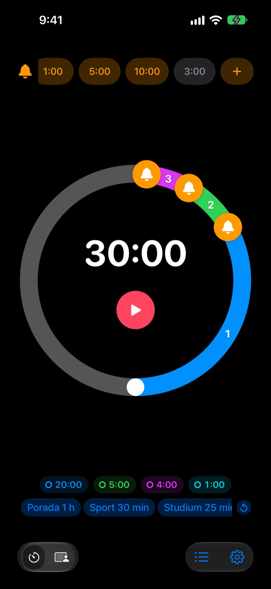
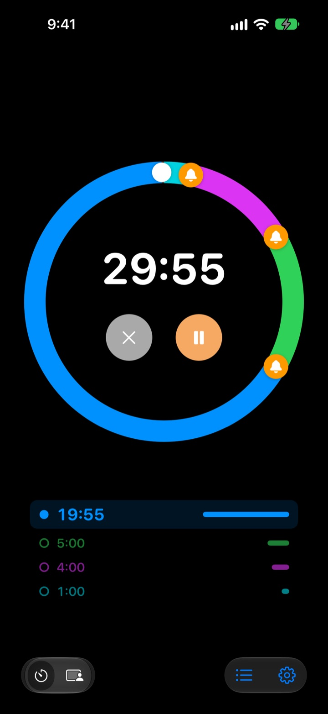
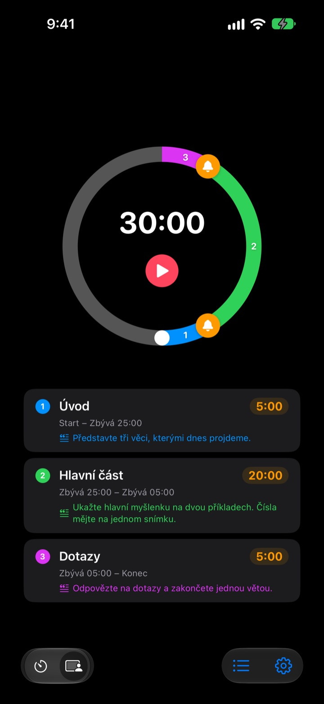
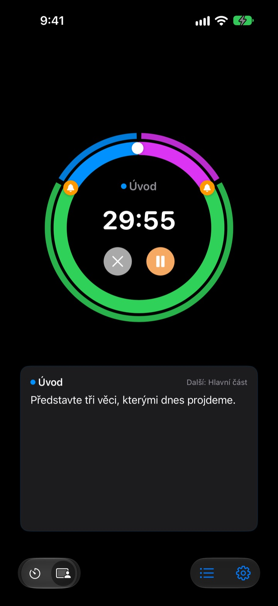

Ne až po konci,
ale ještě před ním
5 minut před koncem přednášky, 3 minuty před koncem porady. Rereminder se ozve v každém okamžiku, který si zvolíte, a vy nemusíte pořád koukat na hodiny.
Upozornění předem jsou zdarma a bez limitu. Pro iPhone, Apple Watch a Mac.

Vyzkoušejte si to tady
Vyberte délku a upozornění a stiskněte červené tlačítko. Minuta uběhne za vteřinu a každé upozornění zazní ve svou chvíli.
Zazvonil vám někdy časovač, když už bylo pozdě?
Běžný časovač zvoní až na nule. Přednáška skončí dřív, než se dostanete k závěru, hodina utne shrnutí a porada přeteče do další bez jediného rozhodnutí. Nepotřebujete signál, že čas vypršel, ale upozornění ve chvíli, kdy ještě zbývá čas to uzavřít.
Upozornění před koncem, kolik jich chcete
Přetáhněte zvonky na ciferníku na 10, 5 nebo 1 minutu před koncem, případně kamkoli jinam. Žádný limit, a každé upozornění může mít vlastní text, třeba „Uzavři slajdy“.
I se zhasnutým displejem vidíte zbývající čas na zamčené obrazovce a v Dynamic Islandu a Apple Watch vám ťukne na zápěstí.

Rozdělte přednášku na části
Úvod 5 minut, hlavní část 20, dotazy 5. Každé části dejte název a text. Při každé změně přijde upozornění s jejím názvem a časový plán se dodrží skoro sám. (Pro)

Co máte říct teď, je na obrazovce
Během běhu vidíte velkým písmem text aktuální části a co následuje. Když přetáhnete přes nulu, počítá dál, abyste věděli, o kolik jste přetáhli. (Pro)

Začnete ve třech krocích
- 1
Nastavte čas
Otočte ciferníkem nebo klepněte na čas a zadejte ho. Jedno kolo je 60 minut, dvě kola 120.
- 2
Rozmístěte upozornění
Klepněte nahoře na štítek jako 1:00 nebo 5:00, nebo přetáhněte zvonek na ciferník.
- 3
Spusťte a nemyslete na to
Zamkněte iPhone. iPhone i Apple Watch se ozvou v každém okamžiku, který jste nastavili.
Nejčastější nastavení
- Přednáška na 20 minut
- 5 min předem „Přejdi k závěru“, 1 min předem „Poděkuj“
- Vyučovací hodina 45 minut
- 10 min předem „Zadat úkol“, 3 min předem „Shrnutí“
- Porada na 30 minut
- 5 min předem „Shrnout rozhodnutí“
- Lekce pilates nebo jógy
- Režim sezení, jedna část na každou sestavu (Pro)
- Učení 25 minut
- 5 min předem, pak přestávka
- Pauza 3 minuty mezi sériemi
- 30 s předem „Připrav se na další sérii“
- Mentoring na hodinu
- 15 a 5 min předem
Co používáte často, uložte jako šablonu a spusťte jedním klepnutím (od plánu Paměť). Časovač můžete spustit nebo zastavit i přes Zkratky a Siri.
Upozornění předem jsou zdarma. Platíte, jen když si má něco pamatovat.
Zdarma
- Neomezený počet upozornění předem
- Vlastní text u každého upozornění
- Živá aktivita na zamčené obrazovce a v Dynamic Islandu
- Upozorňovat, dokud nezareagujete, a na konci zazvonit jako budík
- Aplikace pro Apple Watch a řádek nabídek na Macu
- Všechny barvy motivu
Paměť · Pro
- Paměť: uložte nastavení jako šablonu a spusťte ho jedním klepnutím
- Paměť: po znovuotevření je vše, jak jste to nechali
- Pro: vše z Paměti plus režim sezení s názvy částí a texty
- Pro: přetažení času, historie a statistiky
U každého plánu volíte roční předplatné, nebo jednorázový nákup navždy. Režim sezení, přetažení času a historii si můžete před zaplacením párkrát vyzkoušet.
Žádné reklamy. Pas navždy navíc odemkne všechny aplikace od Leeo.
Časté dotazy
Upozornění se neozvalo.
Skoro vždy jde o oprávnění nebo režim soustředění. Zkontrolujte oprávnění k oznámením v aplikaci v Nastavení › Způsob upozornění. Pokud používáte režim soustředění, přidejte Rereminder mezi povolené aplikace v Nastavení › Soustředění v iOS. V tichém režimu jen zavibruje. Je-li Rereminder v Nastavení › Oznámení › Plánovaný souhrn, upozornění se zadržují, tak ho odtamtud vyřaďte.
Poznám konec i v tichém režimu?
Ano. Zapněte „Na konci zazvonit jako budík“ a zazvoní nahlas i v tichém režimu nebo při soustředění. S volbou „Upozorňovat, dokud nezareaguji“ se ozývá, dokud v oznámení neklepnete na Zastavit nebo Odložit.
Apple Watch se nesynchronizují.
Otevřete v aplikaci Nastavení › Moje zařízení, kde uvidíte, který krok chybí. Hodinky musí být spárované s tímto iPhonem, Rereminder na nich musí být nainstalovaný a po instalaci ho na hodinkách musíte jednou otevřít. Pak se časovač přenese, i když je aplikace na hodinkách zavřená.
Mac se ukazuje jako nepřipojený.
„Připojeno“ znamená, že aplikace byla na tom Macu otevřená v posledních 10 minutách, takže právě probuzený Mac se objeví za pár minut. Obě zařízení potřebují stejný účet iCloud se zapnutým iCloud Drivem. Aplikace pro Mac vyžaduje macOS 26 nebo novější.
Zaplatil jsem, ale nic se neodemklo.
Na obrazovce s plány klepněte na „Obnovit nákupy“, přihlášeni ke stejnému Apple účtu, ze kterého jste platili. Nákupy navždy se vrátí i po smazání aplikace nebo na novém zařízení.
Uložené šablony jsou zamčené.
Pořád tam jsou. Bez Paměti nebo Pro zůstanou vidět zamčené a hned po zakoupení jednoho z nich se znovu otevřou.
Jak získám peníze zpět?
Vrácení peněz vyřizuje Apple. Požádejte o něj na reportaproblem.apple.com z Apple účtu, kterým jste platili. Pokud něco nefungovalo, dejte vědět i mně, ať to nepotká dalšího.
Dá se to vyzkoušet bez instalace?
Otevřete m1zz.github.io/rereminder na iPhonu a časovač se hned spustí jako App Clip. Ciferník i upozornění tam jsou. Šablony, režim sezení a aplikace pro hodinky jsou v plné aplikaci.
Na jakých zařízeních to funguje?
iPhone se systémem iOS 26 nebo novějším, Apple Watch s watchOS 11.6 nebo novějším a Mac s macOS 26 nebo novějším. iPad zatím podporovaný není. Aplikace je ve 24 jazycích.
Kde jsou moje data?
Časovače, šablony, názvy částí, texty a historie zůstávají ve vašem zařízení a se smazáním aplikace zmizí. Aplikace posílá jen anonymní statistiky používání, které pomáhají ji vylepšovat. Které přesně, najdete v zásadách ochrany soukromí.
Dotazy nebo připomínky? Pište na leeo@kakao.com. Obvykle odpovídám do 2 až 3 dnů.